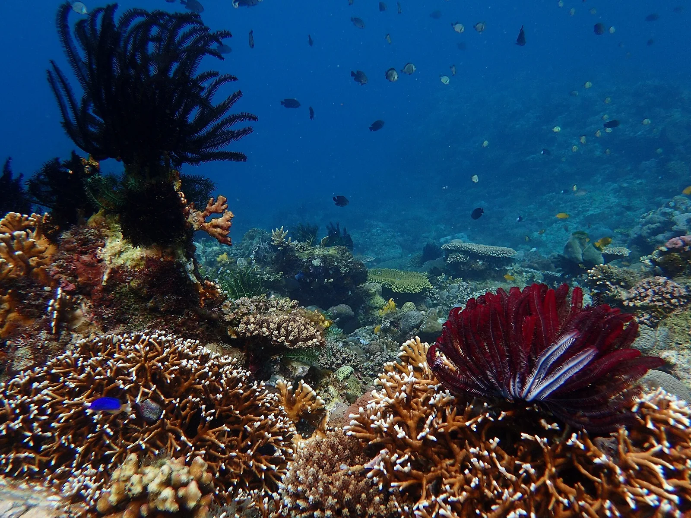

Sabang — Puerto Galera
Mindoro, Philippines · plongée, snorkeling

Village de plongée au nord de Mindoro, face au passage de l’île Verte, réputé pour sa très grande diversité de poissons côtiers. Récifs, épaves immergées et tombants se succèdent le long de la côte.
- Lieu
- Mindoro, Philippines
- Niveau
- Intermédiaire
- Activités
- plongée, snorkeling
- Type d'eau
- Mer / océan
- Coordonnées
- 13.52, 120.97 (position approximative du secteur)
Dangers à connaître
- Courants de marée forts dans le passage.
- Nombreux bateaux devant la plage.
Le conseil d'Ocean Buddy
Certains sites sont balayés par de forts courants : suis attentivement les briefings et plonge avec un centre local.
Ouvrir dans Ocean Buddy Télécharger sur l'App Store
Source : Fiche Ocean Buddy · septembre 2026 · à vérifier localement.